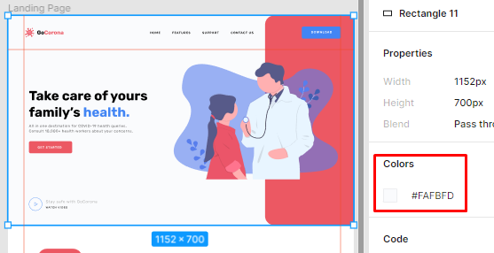
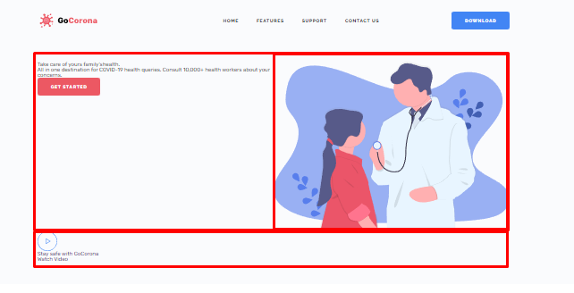
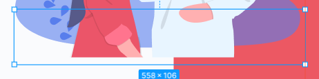
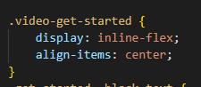
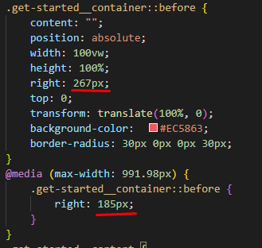

Секция-1
Подготовка
Анализ секции
У нас есть блок с изображением и блок с контентом, в котором расположен текстовый блок и снизу ссылка на видео.
Выгрузим картинку. Это у нас векторное изображение, поэтому для экспорта выбираем формат SVG
Создадим папку для картинок get-started-img по названию кнопки в этой секции. В дальнейшем, для названия секции мы также используем это имя.
Создание структуры
В первую очередь создадим блок самой секции и дадим ему уникальное имя по названию кнопки "GET STARTED", оно нигде не повторяется.
Следующий шаг - ограничивающий контейнер get-started__container
Если заходить в семантику, то <div> c get-started нам следует заменить на <section>, потому что у нас здесь будет заголовок. В этом проекте мы не будем сильно углубляться в семантику. Я рекомендую сначала научиться верстать, а потом интегрировать семантику - так у вас уже будет понимание структурности, понимание надежности и тогда вы легко и просто сможете взять на вооружение семантику и доступность.
Дальше, как мы уже определили из анализа секции, здесь у нас есть блок __content и блок __image, в который мы поместим нашу картинку
Что касается контента. Мы видим, что заголовок текстового блока этой секции и остальных секций сделаны одинаково.
Поэтому, мы сразу можем закрыть этот контент в отдельный текстовый блок и назвать его block-text. В этом блоке у нас будет заголовок __title, текст __text и кнопка __button

Что я сделал - я понял, что эти блоки одинаковы по всему сайту и хочу сделать из них отдельный БЭМ-блок. Можно еще сделать его элементом конкретного блока get-started

Дальше, я скопирую и перенесу заголовок. Здесь у нас последнее слово синего цвета, поэтому добавим <span>. Поскольку, я собираюсь использовать этот БЭМ-блок и для других секций, но в них последнее слово выделено розовым цветом, то для блока заголовка block-text__title я добавлю еще один класс с модификатором _blue. И поскольку это у нас заголовок, при этом еще и главный, мы заменим <div> на <h1>
Дальше переносим текст из макета и название кнопки. Соответственно, для кнопки меняем <div> на ссылку <a>
Под этим текстовым блоком имеется еще блок с кнопкой перехода к просмотру видео. Соответственно, под get-started__block-text block-text перескочим сразу в отдельный БЭМ-блок для видео get-started__video.
В этом блоке у нас есть иконка. мы ее можем поставить фоном или загрузить изображение. Будем загружать изображением. И для начала экспортируем иконку из макета себе на компьютер в формате SVG.
Дальше, нам нужно создать отдельный блок для иконки. Но, кроме иконки в блоке видео присутствует еще и текстовый блок. Поэтому, добавим еще один класс для блока видео и присвоим ему имя video-get-started. Теперь от имени этого класса, по БЭМ-наследованию будем создавать блок иконки и текстовый блок.
Делаем блок иконки по БЭМ-наследованию video-get-started__icon и помещаем в него иконку
И здесь, я бы весь блок видео video-get-started__icon я бы сделал одной ссылкой, т.к. переход у нас должен присходить при клике, как по иконке, так и по тексту. Поэтому, я поменяю <div> на <a>
Мне до сих пор не по себе, когда дивы добавляю внутрь строчной ссылки. Относительно с недавнего времени Консорциум W3C разрешил, и валидатор уже не будет ругаться, разрешил использовать дивы и прочие блочные теги внутри ссылок. Раньше этого делать было нельзя, сейчас можно. Но, у меня до сих пор срабатывает такой рефлекс, типа что-то не так.
Дальше, собирем текстовый блок video-get-started__body и разместим внутри блок заголовка и блока текста, сразу же скопируем и перенесем сам текст
Итак, мы создали html-структуру первой секции и теперь перенесем классы в css, чтобы стилизировать. Для этого, выделяем всю структуру, нажимаем Ctrl+Shift+X и eCSSTRACTOR копирует классы, переходим в css, нажимаем Ctrl+V и все классы быстро продублировались

Стилизация
Исправление ошибки - отделение блока видео
Во-первых, цвет у нашего блока не белый, а слегка сероватый, привет дизайнеру,

Я заметил, что совершил ошибку в структуре этого блока. В чем, собственно, ошибка? Ограничивающий контейнер секции - при анализе я разделил его на блок контента слева и блок изображения справа. Но, чтобы можно было дальше работать с этой секцией, мне стоит разделить ограничивающий контейнер на два этажа. И уже верхний этаж делить на контент и изображение
Поэтому, блок видео get-started__video video-get-started я извлеку из get-started__content и расположу его снизу первым этажом, т.е. контент и изображение будут над ним
Блоки контента и изображения
Верхний отступ по самой верхней точке секции составляет 153 пикселя, а нижний - 48. Округлю их до 150 и 50
Дальше давайте займемся контейнером .get-started__container - зададим ему display: flex.
Для контентного блока зададим ширину 50% от ширины флекс-блока. И 50% ширины для блока с изображением.
Настройка блока видео
Блок видео у нас расположился справа, согласно флекс-модели. Осталось перенести его вниз. Для этого добавим к .get-started__container, который задал флекс-блок, свойство flex-wrap: wrap, позволяя объекту перемещаться. Для video-get-started будет ширина 100%. И для самой картинки также зададим масксимальную ширину 100%, тогда она выдавит блок видео на строку ниже
- flex-wrap
- Указывает, следует ли флексам располагаться в одну строку или можно занять несколько строк. Если перенос строк допускается, то свойство также позволяет контролировать направление, в котором выкладываются строки.
- wrap
- Флексы выстраиваются в несколько строк, их направление задаётся свойством flex-direction.

Я-то разместил блок видео на 100% ширины, но это не очень хорошо, потому что ссылка будет нажиматься в таком случае по всей длине. Ссылка должна нажиматься там, где она есть.
Кроме того, картинка шире, чем контентный блок. У нас эти блоки не по 50%. Слева отступ контента 18 пикселей, округлим до 20

Придется нам высчитывать сейчас процентное соотношение. Ширина картинки вместе с отступом 558 пикселей. По отношению к длине ограничивающего контейнера 1057 пикселей получается 52%. Тогда ширина контентного блока 48%. Так и исправим

Блок видео с левой стороны имеет такой же отступ, как и у контентного блока
И мне придется все-таки убрать здесь ссылку и переделать конструкцию
Я разделил классы и положил все-таки video-get-started внутрь элемента get-started__video. Соответственно, я задам отступ слева теперь блоку get-started__video и, соответственно, навешу ему возможность увеличиваться через flex. Т.е. свойства, которые были заданы для video-get-started я перенесу в стили для get-started__video. И, соответственно, самой ссылке дадим новые свойства и теперь она не будет нажиматься по всей длине, а только там где она непосредственно находится. Таким образом решили проблему с кликом по ссылке

- inline-flex
- Элемент ведёт себя как строчный и выкладывает содержимое согласно флекс-модели.
- align-items
- выравнивает флекс-элементы внутри контейнера в перпендикулярном направлении.
- center
- Флексы выравниваются по линии поперечной оси.
Теперь, когда исправили все ошибки и настроили все, как надо, займемся стилизацией
Контент. Стилизация.
Для ограничивающего контейнера также зададим, чтобы флекс-элементы внутри выравнивались по центру

На текстовый блок хорошо бы отступ безопасности повесить, но, в принципе, можно просто ограничить контент, скажем, на 410 пикселей. Конкретно, get-started__block-text ограничим

И, теперь стилизуем контентный блок. Он у нас довольно общий - включает: заголовок, текст и кнопку. сделаем заголовок первым. span с _blue у нас будет голубой, а по умолчанию - розовый.
Займемся текстом. Здесь только высоту строки нужно добавить, остальное уже в стилях для body прописано
Отступ от заголовка до текста 12 пикселей. Я сделаю его через :not(:last-child), т.к. эти псевдоклассы позволяют нам добавлять отступ только, если объект не последний. Это автоматически уберет у последнего объекта отступ. Соответственно, если вдруг будет меняться html и заказчик уберет эти объекты (заголовок, текст), то когда объект останется один или будет последним, то висячий отступ у него уберется. Это хороший прием

- :not
- Псевдокласс :not задаёт правила стилей для элементов, которые не содержат указанный селектор.
- Синтаксис
- Селектор:not(<Селектор>) { ... }
- В качестве селектора могут указываться единичные псевдоклассы, теги, идентификаторы, классы и селекторы атрибутов. Нельзя использовать псевдокласс :not (конструкция
:not(:not(...))запрещена) и псевдоэлементы.
- :last-child
- Псевдокласс :last-child задаёт стиль последнего элемента в группе братских элементов (имеющих одного родителя).
- Синтаксис
- Селектор:last-child { ... }
- При добавлении селектора к :last-child сперва берётся последний элемент, затем смотрится какого он типа. Если элемент совпадает с указанным селектором, то он будет выбран. Таким образом, выбирается элемент, если он удовлетворяет двум условиям одновременно: это последний элемент и это элемент указанного типа.
То же самое мы сделаем для текста. Здесь отступ 24 пикселя. Соответственно, если кнопку уберут, то этот отступ автоматически исчезнет - вот в чем прелесть.
Займемся видео. Ширина кнопки 44 пикселя
Отступ текста от кнопки 12 пикселей
Стили заголовка
Стили текста
Теперь нужно решить, как нам реализовать отступ между заголовокм и текстом. Первый скрин - это, как должно быть в макете, второй - что есть. Третий - попробуем реализовать через флексы
С флексами у нас ничего не получается. Тогда сделаем отступ в 5 пикселей, используя :not(:last-child). И получается, как надо

60 пикселей у нас отступ от верхнего блока - добавим его в .get-started__video, где у нас был установлен только левый отступ. Поскольку у нас получилась грамотная структура, любые изменения делаются очень легко и для этого, однозначно, стоит пожертвовать каким-то лишним DIVом.

Отлично. Теперь нам нужен наш декор.
Декор. Стилизация.
Тут стоит крепко задуматься, как его реализовать. В стилях шапки мы задавали его ширину изначально в связке с шириной блока кнопки 252px, но потом - 170px
Будем работать с контейнером .get-started__container и зададим ему относительное позиционирование. Далее, обратимся к нему через псевдоэлемент .get-started__container::before и здесь уже привяжем его - сделаем абсолютное позиционирование с шириной и высотой в 100%. Соответственно, координаты максимально вверх и вправо, цвет фона берем из макета и закругления. И, разумеется, content: ""; , чтобы применить эти стили

Глядя на результат, я не в очень хорошем месте сделал отступы - их надо убрать у get-started и добавить к контейнеру get-started__container, потому декор у нас получился ниже шапки, а должен подниматься в самый верх. Здесь же добавим и боковые отступы безопасности.
Теперь мне нужно этот декор полностью сдвинуть через transform
- transform
- Трансформирует элемент, в частности, позволяет его масштабировать, вращать, сдвигать, наклонять, а также комбинировать виды трансформаций, перечисляя функции трансформации через пробел.
- translate()
- Сдвигает элемент на заданное значение по горизонтали и вертикали.
И теперь мне необходимо вернуть на эти 252 пикселя, а потом 170. Правый минусовой margin здесь не сработает, т.к. для элемента у нас задано абсолютное позиционирование со своими координатами. Поэтому, работать будем через right в 252 пикселя
Соответственно, картинку поднимаем над декором. И декор у нас на широком мониторе закончится на ширине 2700 пикселей
Этой ширины вполне достаточно, но мы можем сделать ширину не 100%, 100vw. Это относительная единица, которая даст нам всю ширину "viewport". Это хорошая практика. На макете полотна мало, но уже на своем экране мы видим, что полотно гораздо шире. Важно понимать, где есть полотно, а где есть контент. В итоге, у нас все отлично и декор продолжается дальше и на большем экране.
Осталось настроить адаптив.
Адаптив
@media (max-width: 991.98px)
На 992 мы эту ширину очень легко и быстро меняем через правую координату на 170 пикселей и смотрим, достаточно ли нам этого
Тут плюс 15 пикселей надо добавлять на отступы ограничивающего контейнера. Добавим и теперь все смотрится лучше

Я еще уменьшу радиус закругления углов, чтобы смотрелось пропорционально. И у нас родился очень хороший адаптив на планшете
@media (max-width: 767.98px)
На разрешении 768 мы этот декор уберем совсем, потому что будем перестраивать структуру и декор будет только загромаждать экран на меньшем размере. И мы сразу видим, что нам не хватает отступа безопасности для контента
У нас был задан только левый отступ для .get-started__content. Поэтому, сразу изменим свойство и зададим такой же правый отступ в 20 пикселей на верхних расширениях
И, собственно, в этот момент мы перестроим структуру. Для этого нам достаточно у текстового блока убрать ограничения в ширине и позволить ему увеличиваться, задав flex для .get-started__content. Соответственно, отступы тут нам уже тоже не нужны

Также, уменьшим верхний и нижний отступы для контейнера, чтобы смотрелось компактней
Для картинки, также позволяем увеличиваться, выравниваем по центру вертикали и задаем верхний-нижний отступы, чтобы не прилипала к контенту и к видео. Соответственно, для видео теперь padding можно убрать

Получился отличный адаптив. Можно еще поработать с текстом. Для заголовка уменьшим размер текста с 44 на 34 пикселя. Так смотрится более органично

Если кто-то хотел посавить картинку сверху, то это зря. Восприятие человека лучше, когда он сначала видит текст, а потом видит визуализацию этого текста.
Каждый раз радуюсь, как ребёнок, когда понимаю, что получается, что пользователю удобно, что все складывается и красиво выглядит. У нас все отлично работает и мы можем продолжать. Переходим ко второй секции.